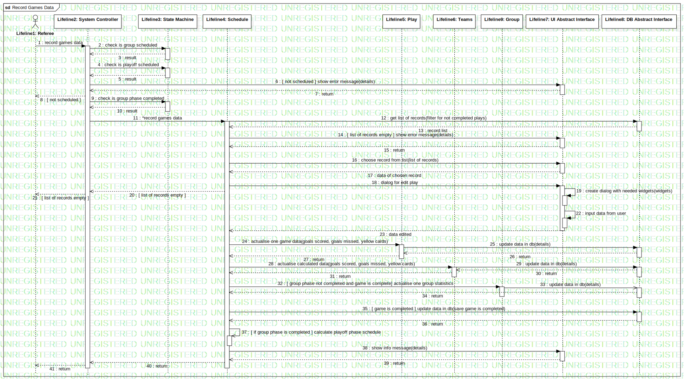

Interaction1
UMLInteraction
Untitled
::
Model1
::
Collaboration8
::
Interaction1
Description
none
Diagrams

Record Games Data
Participants
Lifeline1: Referee
Lifeline2: System Controller
Lifeline3: State Machine
Lifeline4: Schedule
Lifeline5: Play
Lifeline6: Teams
Lifeline7: UI Abstract Interface
Lifeline8: DB Abstract Interface
Lifeline9: Group
Messages
record games data (Lifeline1→Lifeline2)
check is group scheduled (Lifeline2→Lifeline3)
result (Lifeline3→Lifeline2)
check is playoff scheduled (Lifeline2→Lifeline3)
result (Lifeline3→Lifeline2)
[ not scheduled ] show error message (Lifeline2→Lifeline7)
return (Lifeline7→Lifeline2)
[ not scheduled ] (Lifeline2→Lifeline1)
check is group phase completed (Lifeline2→Lifeline3)
result (Lifeline3→Lifeline2)
*record games data (Lifeline2→Lifeline4)
get list of records (Lifeline4→Lifeline8)
record list (Lifeline8→Lifeline4)
[ list of records empty ] show error message (Lifeline4→Lifeline7)
return (Lifeline7→Lifeline4)
choose record from list (Lifeline4→Lifeline7)
data of chosen record (Lifeline7→Lifeline4)
dialog for edit play (Lifeline4→Lifeline7)
create dialog with needed widgets (Lifeline7→Lifeline7)
[ list of records empty ] (Lifeline4→Lifeline2)
[ list of records empty ] (Lifeline2→Lifeline1)
input data from user (Lifeline7→Lifeline7)
data edited (Lifeline7→Lifeline4)
actualise one game data (Lifeline4→Lifeline5)
update data in db (Lifeline5→Lifeline8)
return (Lifeline8→Lifeline5)
return (Lifeline5→Lifeline4)
actualise calculated data (Lifeline4→Lifeline6)
update data in db (Lifeline6→Lifeline8)
return (Lifeline8→Lifeline6)
return (Lifeline6→Lifeline4)
[ group phase not completed and game is complete] actualise one group statistics (Lifeline4→Lifeline9)
update data in db (Lifeline9→Lifeline8)
return (Lifeline8→Lifeline4)
[ game is completed ] update data in db (Lifeline4→Lifeline8)
return (Lifeline8→Lifeline4)
[ if group phase is completed ] calculate playoff phase schedule (Lifeline4→Lifeline4)
show info message (Lifeline4→Lifeline7)
return (Lifeline7→Lifeline4)
return (Lifeline4→Lifeline2)
return (Lifeline2→Lifeline1)
Properties
Name
Value
name
Interaction1
stereotype
null
visibility
public
isReentrant
true
Owned Elements
Record Games Data